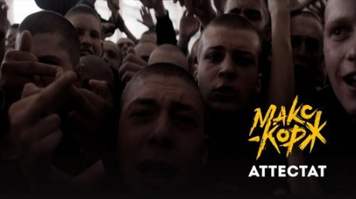

Аттестат
Текст
[Куплет 1]
Мама говорила: «Учись» (Учись) Потом как найдёшь (Ага) Улица готовила сюрприз (Кто?) Рядом друзья надёжные (Ну-так и что?) Где же вы, где же вы, учителя (С тобой) Каждый из них был прав (О чём?) Жизнь всё-таки повела нас не туда Кто вино-вино-виноват? (Аттестат)[Припев]
Так кто виноват? Так кто виноват? (Аттестат) Кто вино-вино-виноват? Кто вино-вино-виноват? Кто вино-вино-виноват? Кто вино-вино-виноват?[Куплет 2]
Красная лента в плечо Впереди вся жизнь на блюде Просто дайте мне аттестат И больше духу моего, блядь, здесь не будет (Ха-ха) Ни в коем случае (Эй-эй) Но ты тогда был с ним (Ей, ей), а я был дурак (Go, go) Всё решилось быстро (Давай) Кто вино-виноват? (Давай) (Аттестат)[Припев]
Кто вино-вино-виноват? Кто вино-вино-виноват? Кто вино-вино-виноват? Кто вино-вино-виноват? Так кто виноват? Так кто виноват? Так кто виноват? Так кто виноват?[Куплет 3]
Аттестат в крови, по бокам конвой А меня везут под сирены вой (Братишка, высади здесь) И теперь там ждут друзья новые (Прям возле школы высади) А предметы там уголовные (А что, сегодня день встречи выпускников?) (Да не, аттестат надо забрать) Аттестат[Припев]
Так кто виноват? Так кто виноват? Так кто виноват? (Аттестат) Кто вино-вино-виноват? Кто вино-вино-виноват? Кто вино-вино-виноват? Кто вино-вино-виноват?[Аутро]
Аттестат